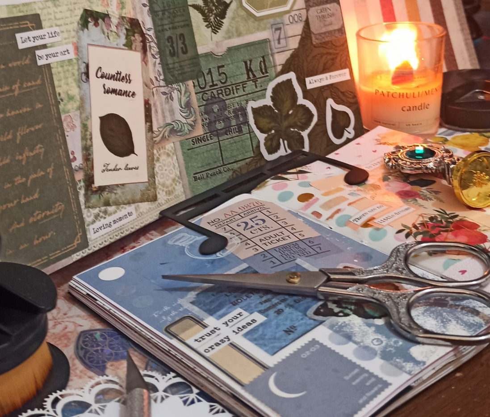

Dancing
I started dancing in 2020, in a school next my home. When
covid 19's lockdown started, I keep my classes in a online
mode.
Dancing
I started dancing in 2020, in a school next my home. When
covid 19's lockdown started, I keep my classes in a online
mode.
The dace have been my physical exercise and rest from screens. It helps to exercise teamwork, coordination and patience with the learning process.
I'm in advanced class of Bellydance and intermediate class of Fusion Bellydance, taking regular classes with brazilian teachers and online workshops with teachers around the world.

Scrapbook
I started making a scrapbook journal about my dancing in 2023.
I uses colorful paper scraps, stickers, motivational phrases
and photos of my dance performances.
The scrapbooking process helps concentration, creativity, coordination and it's a relaxing activity.
Some time later I started to make an empty scrapbook journal with just paper scraps and stickers in a "art for art's sake" idea.
The scrapbooking process helps concentration, creativity, coordination and it's a relaxing activity.
Some time later I started to make an empty scrapbook journal with just paper scraps and stickers in a "art for art's sake" idea.
Static template created with TeleportHQ